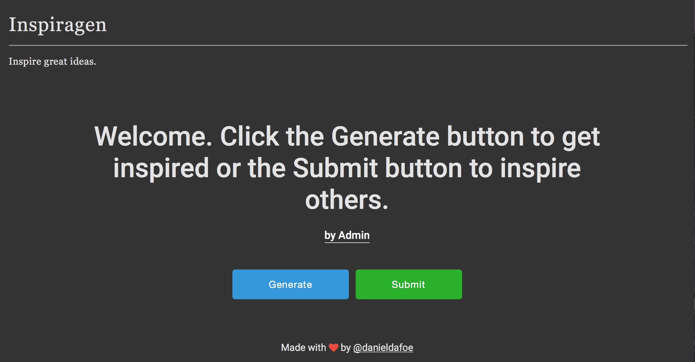
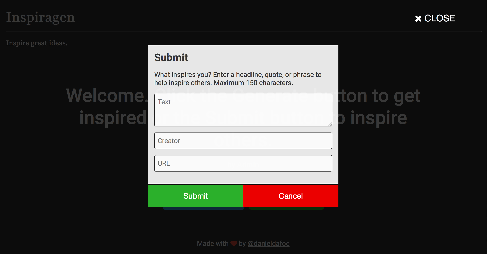
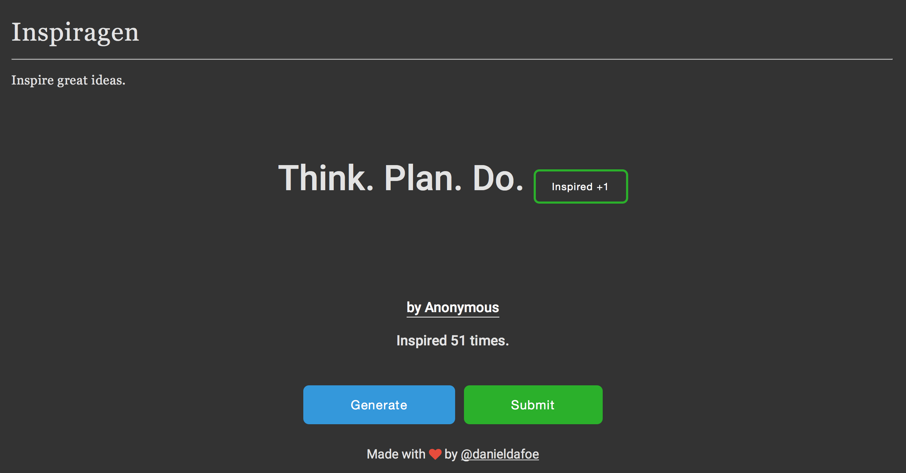

Inspiragen
After reading about the coder who created a simple side project where users could submit their best execuses for working from home, I was inspired to develop something similar. My project would allow me to demonstrate that I can build neat ideas quickly, as well as show that my skills are improving.
So here we are—I've taken a couple days to put together my first - completed - side project. The initial idea for Inspiragen was a place for copywriters to share taglines, headlines, and copy that would help inspire others to come up with their next copy break-through.
As I developed out the functionality to submit and generate using AngularJS, my mind started forming new ideas of its own. I wanted this to instead become a place where anyone could post any type of text. The text could be a sentence that motivates, a poem that inspires emotion, or even a haiku that embodies the creative spirit.

Design
Inspiragen had to allow visitors to get information quickly and submit it just as effectively. Equally important, I wanted visitors to be able to generate and submit without having to scroll or go to any other page.
With my criteria for a simple, one screen application, I began. I wanted to have an appealing, professional feel to the page, so I opted for a darker background colour. The headline sports a sans-serif font for quick reading, and is large enough that it's the focal point.
Submit
Allowing visitors to submit new content was paramount. I wanted content to be created by the community, for the benefit of the community. There are 3 fields to fill out in the submit form: text, creator, and URL.
All are basically self-explanatory, but in case the URL field confuses you, I'll explain. As a "thank you" to the visitor for helping keep Inspiragen alive, I've given them the opportunity for a linkback to their own wesite, Twitter page, or wherever they wish to be found. Other visitors can click on the submitter's name (under the headline) to be taken to whatever URL was entered.


Generate
To ensure that generating headlines was as smooth a process as possible, I wanted to use a JS library that would allow me to dynamically insert results without a page refresh. Having a little experience with AngularJS, I opted to visit it once again.
Users have the abiity to generate as many ideas as they like, and can vote on equally as much. You'll see that I haven't quite worked in the functionality to allow a user to only vote once per idea, but this is something I would like to visit next.
Improvements
Although Inspiragen is now included in my portfolio as a "finished" side project, I will be improving it. I would like to create an algorithm that will show higher rated ideas more often so that, if visitors are coming back to generate more ideas, they'll get better quality content.
The algorithm won't be as straightforward as I just put it, since I will also need to account for both new and lower rated ideas. Further, each idea will still get its opportunity to be on the "big stage", but focus should be made on display great ideas that have helped others.
As noted in the previous section, I need to restrict to users to only vote once per idea. Currently, users can vote as many times as they want.